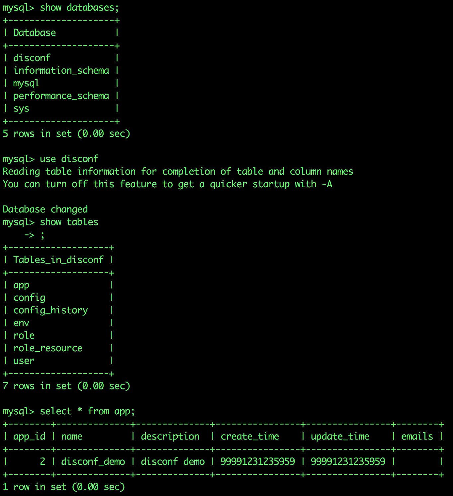

原文连接:https://www.cnblogs.com/bolingcavalry/p/11495509.html
在用docker创建mysql容器的时，有时候我们期望容器启动后数据库和表已经自动建好，初始化数据也已自动录入，也就是说容器启动后我们就能直接连上容器中的数据库，使用其中的数据了。
其实mysql的官方镜像是支持这个能力的，在容器启动的时候自动执行指定的sql脚本或者shell脚本，我们一起来看看mysql官方镜像的Dockerfile，如下图：
已经设定了ENTRYPOINT，里面会调用/entrypoint.sh这个脚本，我们把mysql:8这个镜像pull到本地，再用docker run启动起来，看看里面的entrypoint.sh这个脚本的内容，有一段内容就是从固定目录下遍历所有的.sh和.sql后缀的文件，然后执行，如下图：
搞清楚原理了，现在我们来实践一次吧：
在docker上搭建disconf环境时，需要搭建mysql数据库，并且要依次执行四个sql文件分别对数据库，表，数据做初始化，我们有两种做法：
- 将四个sql文件复制到/docker-entrypoint-initdb.d目录下，这样容器run的时候的时候就会自动执行这四个sql，但是从截图的脚本上来看，对多个文件中的执行顺序是不能指定的，如果创建数据库的脚本晚于创建表的脚本执行，那么就会导致建表失败，所以这种复制sql的方式不能满足我们的需要(不过，如果将四个文件按照顺序合成一个sql就能满足要求了)；
- 做一个sh文件，在里面按我们自己的需要来执行sql，内容如下：
#!/bin/bash
mysql -uroot -p$MYSQL_ROOT_PASSWORD <<EOF
source $WORK_PATH/$FILE_0;
source $WORK_PATH/$FILE_1;
source $WORK_PATH/$FILE_2;
source $WORK_PATH/$FILE_3; 看得出shell很简单，登录mysql并执行指定的sql文件，MYSQL_ROOT_PASSWORD，WORK_PATH，FILE_0这些都是环境变量。
再来看看对应的Dockerfile怎么写，如下：
# Docker image of disconf mysql
# VERSION 0.0.1
# Author: bolingcavalry
#基础镜像使用daocloud.io/library/mysql:8
FROM daocloud.io/library/mysql:8
#作者
MAINTAINER BolingCavalry <zq2599@gmail.com>
#定义工作目录
ENV WORK_PATH /usr/local/work
#定义会被容器自动执行的目录
ENV AUTO_RUN_DIR /docker-entrypoint-initdb.d
#定义sql文件名
ENV FILE_0 0-init_table.sql
ENV FILE_1 1-init_data.sql
ENV FILE_2 20151225.sql
ENV FILE_3 20160701.sql
#定义shell文件名
ENV INSTALL_DATA_SHELL install_data.sh
#创建文件夹
RUN mkdir -p $WORK_PATH
#把数据库初始化数据的文件复制到工作目录下
COPY ./$FILE_0 $WORK_PATH/
COPY ./$FILE_1 $WORK_PATH/
COPY ./$FILE_2 $WORK_PATH/
COPY ./$FILE_3 $WORK_PATH/
#把要执行的shell文件放到/docker-entrypoint-initdb.d/目录下，容器会自动执行这个shell
COPY ./$INSTALL_DATA_SHELL $AUTO_RUN_DIR/
#给执行文件增加可执行权限
RUN chmod a+x $AUTO_RUN_DIR/$INSTALL_DATA_SHELL0-init_table.sql，1-init_data.sql，20151225.sql，20160701.sql这四个文件就是我们要执行的sql，在构造docker镜像的时候被复制到镜像文件中了；
完整内容请clone我的github：git@github.com:zq2599/docker_disconf.git，clone完毕后进入里面的mysql文件夹，在此文件夹下执行命令行docker build -t disconf_mysql:0.0.1 .构建镜像；
再执行docker run –name mysqldisconf -e MYSQL_ROOT_PASSWORD=123456 -idt disconf_mysql:0.0.1启动一个容器，再执行docker logs -f mysqldisconf查看容器日志，如下图红框，可以看到我们写入指定位置的sh文件已经被执行了:
我们去数据库里看看数据是不是真的有了，执行docker exec -it mysqldisconf /bin/bash进入容器；
执行mysql -uroot -p123456登录mysql后，操作如下图：

可以看到，show databases，show tables，select * from app等操作都可以证明sql已经在容器创建后被自动执行，达到了我们的目的。
欢迎关注我的公众号